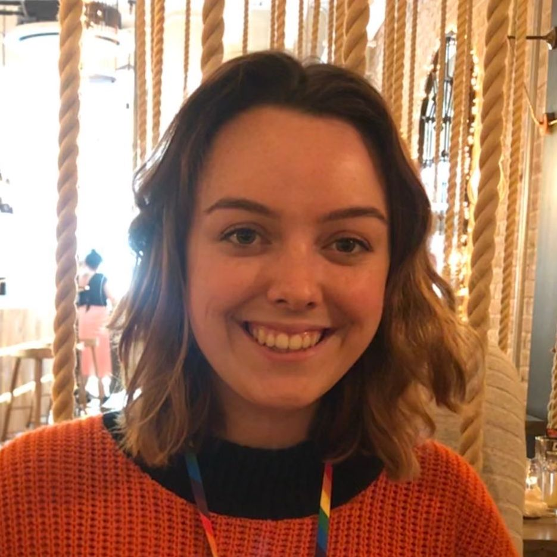
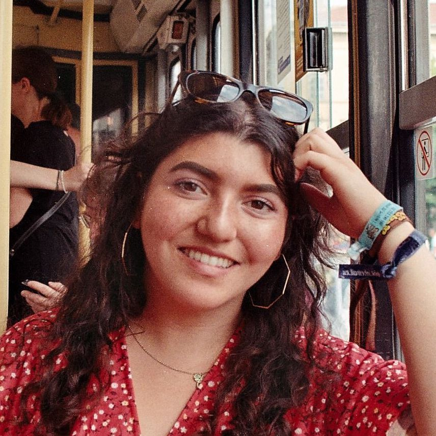
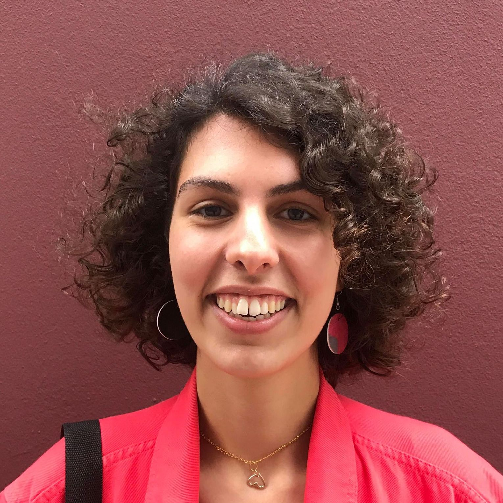

2020-2021 National Committee
National Director
Laina Cores Birch
Sexpression:Manchester
She/Her
Hello, my name is Laina and I’m Sexpression:UK’s National Director this year. I am studying Russian and Spanish at the University of Manchester and am going into my fourth year of volunteering for Sexpression:UK. I dove right in, onto the committee of the Manchester branch as a fresher in 2017 and went on to chair the branch. I joined the National Committee in March 2019 as the Communications Director. I am excited to continue my involvement on a national level, directing the charity and supporting the National Committee and branches with whatever this year brings in the strange times we live in now in 2020!
Externals and Press Director
Eleanor Cochrane
Sexpression:Cardiff
She/Her
Hello, my name is Ellie and I’m Sexpression:UK’s Externals and Press Director this year. I am in my 5th year studying at Cardiff Medical School and I have been a member of Sexpression Cardiff since I started. I'm devoted to improving global sexual health and believe that education holds the power to achieve this. In my role as branch advocacy coordinator, I learned that working with other organisations can amplify our messages and broaden our reach. This year I'm excited to actively pursue press opportunities to reach more young people and to develop and foster partnerships that support us to achieve our mission.
Branches Director
Josie Grace
Sexpression:Bristol
She/Her
Hi, I'm Josie and I'm Sexpression:UK's Branches Director this year! I have just finished my 3rd year studying at Bristol Medical School and am intercalating in Medical Humanities next year, which I am really excited for. I was on the social media team last year, which gave me an insight into how National Committee runs and I enjoyed my involvement so much that I decided to apply! I am excited to continue my involvement in being an advocate, an ear and a voice for branches, and looking forward to seeing what this year holds for Sexpression.
Finance Director
Tom Greenslade
Sexpression:Bristol
He/Him
Hi team! Stoked to be working with the amazing network that is Sexpression:UK. I'll be managing our financial affairs this year. Get in touch with any questions or ideas!
Fundraising Director
Liam Harnett
Sexpression:Sheffield
He/Him
Hiya! My name is Liam, and I'll be serving as the Fundraising Director of Sexpression:UK this year. I’m a 2nd year PhD student at Sheffield, researching the chemistry and clean-up of nuclear waste from accident sites. Currently I'm sitting as the Treasurer & Recruitment Officer for Sexpression:Sheffield. I'm thrilled to be a part of the National Committee, supporting this charity and all the branches that provide the nation’s youth with such a vital service.
Child Protection Director
Eva Zilber
Sexpression:Oxford
She/Her
Hello, my name is Eva and I'm Sexpression:UK Child Protection Director this year! I'm a final year medical student in Oxford, and I've been involved with Sexpression ever since starting university. I've had several roles on Sexpression:Oxford committee, including being Schools Officer and Branch Coordinator, and I was Branches Director on National Committee last year. Safeguarding young people is absolutely central to the work we do in Sexpression, and I'm very excited to support all branches in upholding our Child Protection Policy. I am always here to discuss all things to do with training, incident reporting, and PVG/DBS checks, as well as volunteer data handling.
Training Director
Eddi Gell
Sexpression:UEA
They/Them
Hi all! I'm Eddi and I'm studying an MRes in Social Sciences. My undergraduate degree is in Education and I aspire to continue working in charities in the future.
Advocacy Director
Amy-May Dicks
Sexpression:Oxford
She/Her
Hi, I’m Amy and I’m your Advocacy Director for this year! I’m going into my final year studying medicine in Oxford, and I’m also currently Branch Coordinator for the Oxford branch. I’ve been volunteering with Sexpression since my second year in medical school, but this is my first National Committee role and I’m really excited to be joining the team. Comprehensive and inclusive RSHE should be the reality for all young people and I’m keen to play a part in working towards making that happen.
Communications Director
Anna Shams Ili
Sexpression:Glasgow
She/Her
Hi there! I'm Anna, and I'm the Communications Director this year! I study Digital Media and Sociology at the University of Glasgow. I started with Sexpression last year, jumping right in as Social Media Officer for National, and helped re-start the Sexpression Glasgow branch as Treasurer. During my time I've had a chance to be on many great projects that I can't wait to continue. I'm most looking forward to finding new creative ways to get our message out, and especially working more with the digital side of things.
Trustees
Chair
Matt Williams
He/Him
Matt has been Chair of Trustees at Sexpression:UK since February 2020 having been on the Board since the end of 2016. He has worked with Sexpression:UK since 2011 initially starting out as a volunteer with the Cardiff branch before being elected to roles on both local and national committees and working to register the organisation with the Charity Commission. Matt has previous experience as a trustee having been on the Board of the Family Planning Association and Cardiff University Students’ Union in recent years. In his day job he is a doctor in South Wales and is training to be an emergency medicine consultant.
Treasurer
Jules Hillier
She/Her
Jules is the Chief Executive of the charity Pause and has been a trustee of Sexpression:UK for more than 4 years. She was Deputy Chief Executive and Interim Chief Executive at Brook, the young people’s sexual health organisation, where she led campaigning, communications, policy and participation. She is happy to talk about her experience and the brilliant work Sexpression:UK does on Twitter, where she is @rosylight.
Trustee
Joanna Melville
She/Her
Joanna is a trustee with Sexpression:UK, going into her seventh year with the organisation. Joanna was previously Finance Director, Externals and Press Director, and National Director on the National Committee. Prior to this, Joanna was on the branch committees of Manchester, Oxford, and Warwick branches, volunteering in a range of roles from advocacy to child protection. Joanna is currently studying medicine at Warwick University, and has a keen interest in sexual and reproductive health, both through RSE delivery and conducting research. Her particular passions involve policy development and tackling inequalities.
Trustee
George W X Barker
He/Him
George has been National Director and has built upon the amazing work of branches and previous national committees. Currently studying his fifth year as a medical student at University College London, he has been involved with (and coordinated) Sexpression:UCL for 5 years. He has delivered sessions in schools, as well as training volunteers and worked with his university and local organisations. Now he is building on our relationships with our partner organisations, coordinating our media and press relationships and working with the trustees. George has been fortunate to be able to represent Sexpression:UK in Parliament, at working groups, in the media and at national events, and is looking forward to continuing this work in the future alongside working for, and on behalf of, the wonderful volunteers, branches and trustees.
Trustee
Hannah Wallace
She/Her
Hannah was a member of Sexpression:UK from September 2012 until June 2019. During that time she held positions on her local committee including branch coordinator and delivered multiple sessions to young people. She then went on to be Branches Director and then National Director until she graduated. She is now a trustee and works as a doctor hoping to pursue a career in obstetrics and gynaecology. Hannah hopes to be able to support the current national committee with her knowledge and experience of how the organisation works.
Trustee
Andrew Pembrooke
He/Him
Andrew originally trained as a physical theatre performer, spending many years throwing himself around on stage. He has taught PSHE in schools across the country since 2000. His work with Equal Voice centred around creating a safe environment in which learners could express their feelings, resolve conflict and build self-esteem. This approach remains core to his work today, facilitating RSHE sessions that are informative, enjoyable and comfortable to be in. Andrew now has his own RSHE training company teachsre.co.uk, having previously worked as a senior trainer with leading RSHE resource provider CWP Resources Ltd. Here he trained hundreds of teachers, building confidence and modelling good practice. He also assisted in the writing of ‘Teaching RSHE in Primary Schools’ which was awarded the PSHE association quality mark. Andrew also supports London Schools with their Healthy Schools awards as an advisor for Health Education Partnership.